CAMSHAFT > INSTALLATION |
| 1. INSTALL CAMSHAFT BEARING CAP LH |
Apply a light coat of engine oil to the camshaft journals, camshaft housing and camshaft bearing caps.
Install the No. 3 and No. 4 camshafts to the camshaft housing.
 |
Confirm the marks and numbers on the camshaft bearing caps and place them in their proper positions and directions.
| 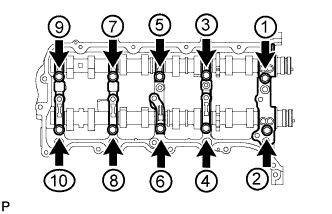 |
Temporarily install the 10 bolts in the order shown in the illustration.
| 2. INSTALL CAMSHAFT HOUSING SUB-ASSEMBLY LH |
 |
Install the valve rocker arms as shown in the illustration.
| *1 | Valve Rocker Arm |
| *2 | Valve Stem Cap |
| *3 | Valve Lash Adjuster |
 |
Apply seal packing in a continuous line as shown in the illustration.
| *1 | Seal Packing |
 |
Install the camshaft housing, and then install the 18 bolts in the order shown in the illustration.
| *A | for Intake Side |
| *B | for Exhaust Side |
| *1 | Knock Pin |
 | Bolt |
 | Bolt A |
 |
Tighten the 10 bolts in the order shown in the illustration.
| 3. INSTALL CAMSHAFT BEARING CAP RH |
Apply a light coat of engine oil to the camshaft journals, camshaft housing and camshaft bearing caps.
Install the No. 1 and No. 2 camshafts to the camshaft housing.
 |
Confirm the marks and numbers on the camshaft bearing caps and place them in their proper positions and directions.
| 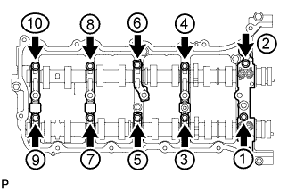 |
Temporarily install the 10 bolts in the order shown in the illustration.
| 4. INSTALL CAMSHAFT HOUSING SUB-ASSEMBLY RH |
|
Install the valve rocker arms as shown in the illustration.
| *1 | Valve Rocker Arm |
| *2 | Valve Stem Cap |
| *3 | Valve Lash Adjuster |
| 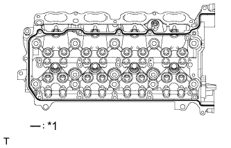 |
Apply seal packing in a continuous line as shown in the illustration.
| *1 | Seal Packing |
 |
Install the camshaft housing, and then install the 18 bolts in the order shown in the illustration.
| *A | for Exhaust Side |
| *B | for Intake Side |
| *1 | Knock Pin |
| Bolt |
| Bolt A |
| 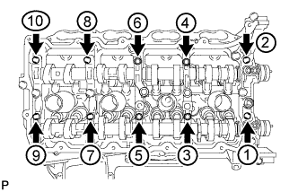 |
Tighten the 10 bolts in the order shown in the illustration.
| 5. INSTALL NO. 2 CHAIN TENSIONER ASSEMBLY |
| 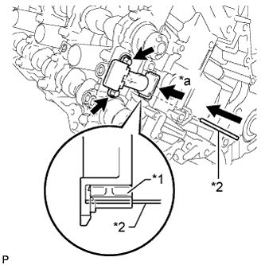 |
Install the No. 2 chain tensioner with the 2 bolts.
| *1 | Plunger |
| *2 | Pin |
| *a | Push |
While raising up the No. 2 chain tensioner, insert a pin with a diameter of 1.0 mm (0.0394 in.) into the hole to fix the tensioner in place.
| 6. INSTALL NO. 1 CHAIN SUB-ASSEMBLY RH |
 |
Align the No. 1 chain's mark plates (orange) with the camshaft timing gear's timing mark and attach the chain to the gear as shown in the illustration.
| *1 | Mark Plate (Orange) |
| *2 | Timing Mark |
| 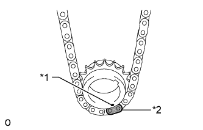 |
Align the No. 1 chain's mark plate (orange) with the crankshaft timing gear's timing mark and attach the chain to the gear as shown in the illustration.
| *1 | Timing Mark |
| *2 | Mark Plate (Orange) |
 |
Align the No. 2 chain's mark plates (yellow) with the timing marks (1-dot marks) of the camshaft timing gear and camshaft timing exhaust gear, and attach the No. 2 chain to the gears as shown in the illustration.
| *1 | Timing Mark |
| *2 | Mark Plate (Yellow) |
Install the crankshaft timing sprocket RH to the crankshaft.
Align the knock pin of the No. 1 camshaft with the pin hole of the camshaft timing gear and install the camshaft timing gear.
Using the hexagonal portion of the No. 2 camshaft, align the knock pin of the No. 2 camshaft with the pin hole of the camshaft timing exhaust gear and install the camshaft timing exhaust gear.
Remove the pin from the No. 2 chain tensioner.
| 7. INSTALL NO. 1 CHAIN VIBRATION DAMPER RH |
Install the No. 1 chain vibration damper RH with the 2 bolts.
| 8. INSTALL CHAIN TENSIONER SLIPPER RH |
| 9. INSTALL NO. 1 CHAIN TENSIONER ASSEMBLY RH |
 |
Move the stopper plate upward to release the lock and push the plunger deep into the No. 1 chain tensioner.
| *1 | Stopper Plate |
| *2 | Plunger |
Move the stopper plate downward to set the lock and insert a hexagon wrench into the hole of the stopper plate.
Install the No. 1 chain tensioner with the 2 bolts.
Remove the hexagon wrench from the No. 1 chain tensioner.
| 10. INSTALL NO. 3 CHAIN TENSIONER ASSEMBLY |
| 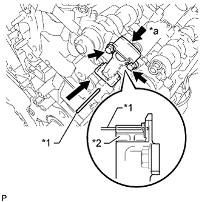 |
Install the No. 3 chain tensioner with the 2 bolts.
| *1 | Pin |
| *2 | Plunger |
| *a | Push |
While pushing down the No. 3 chain tensioner, insert a pin with a diameter of 1.0 mm (0.0394 in.) into the hole to fix the tensioner in place.
| 11. INSTALL NO. 1 CHAIN SUB-ASSEMBLY LH |
| 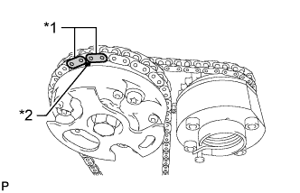 |
Align the No. 1 chain's mark plates (orange) with the camshaft timing gear's timing mark and attach the chain to the gear as shown in the illustration.
| *1 | Mark Plate (Orange) |
| *2 | Timing Mark |
| 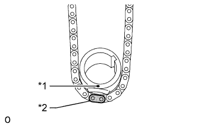 |
Align the No. 1 chain's mark plate (orange) with the crankshaft timing gear's timing mark and attach the chain to the gear as shown in the illustration.
| *1 | Timing Mark |
| *2 | Mark Plate (Orange) |
| 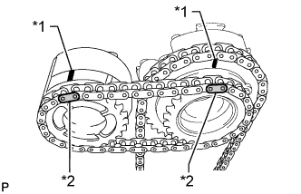 |
Align the No. 2 chain's mark plates (yellow) with the timing marks (1-dot marks) of the camshaft timing gear and camshaft timing exhaust gear, and attach the No. 2 chain to the gears as shown in the illustration.
| *1 | Timing Mark |
| *2 | Mark Plate (Yellow) |
Install the crankshaft timing sprocket LH to the crankshaft.
Align the knock pin of the No. 3 camshaft with the pin hole of the camshaft timing gear and install the camshaft timing gear.
Using the hexagonal portion of the No. 4 camshaft, align the knock pin of the No. 4 camshaft with the pin hole of the camshaft timing exhaust gear and install the camshaft timing exhaust gear.
Remove the pin from the No. 3 chain tensioner.
| 12. INSTALL CHAIN TENSIONER SLIPPER LH |
| 13. INSTALL NO. 1 CHAIN TENSIONER ASSEMBLY LH |
 |
Move the stopper plate upward to release the lock and push the plunger deep into the No. 1 chain tensioner.
| *1 | Stopper Plate |
| *2 | Plunger |
Move the stopper plate downward to set the lock and insert a hexagon wrench into the hole of the stopper plate.
Install a new gasket and the No. 1 chain tensioner with the 2 bolts.
| 14. INSTALL NO. 1 CHAIN VIBRATION DAMPER LH |
Install the No. 1 chain vibration damper with the 2 bolts.
Remove the hexagon wrench from the No. 1 chain tensioner.
| 15. TIGHTEN CAMSHAFT TIMING GEAR ASSEMBLY |
for Bank 1:
 |
Using a wrench to hold the hexagonal portion of the No. 3 camshaft, install the camshaft timing gear bolt.
| *a | Hold |
| Turn |
| 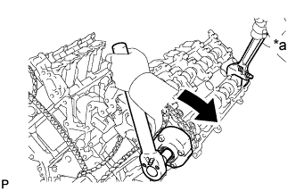 |
Using a wrench to hold the hexagonal portion of the No. 4 camshaft, install the camshaft timing exhaust gear bolt.
| *a | Hold |
| Turn |
for Bank 2:
 |
Using a wrench to hold the hexagonal portion of the No. 1 camshaft, install the camshaft timing gear bolt.
| *a | Hold |
| Turn |
| 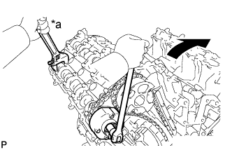 |
Using a wrench to hold the hexagonal portion of the No. 2 camshaft, install the camshaft timing exhaust gear bolt.
| *a | Hold |
| Turn |
| 16. CHECK NO. 1 CYLINDER TO TDC/COMPRESSION |
Temporarily install the pulley set bolt.
Rotate the crankshaft clockwise and check that the timing marks on the crankshaft timing gear and camshaft timing gears are as shown in the illustration.
Remove the crankshaft pulley set bolt.
| *1 | Crankshaft Timing Gear Key | *2 | Timing Mark |
| *a | Toward Ceiling | *b | Timing Mark Position |
| *c | Knock Pin Position | *d | Approximately 2° |
| *e | Approximately 45° | *f | Approximately 16° |
| *g | Approximately 18° | *h | Approximately 32° |
| 17. INSTALL TIMING CHAIN COVER SUB-ASSEMBLY |
Install the timing chain cover sub-assembly (Click here).
| 18. INSPECT IGNITION TIMING |
Warm up the engine.
When using the intelligent tester:
Connect the intelligent tester to the DLC3.
Enter the following menus: Powertrain / Engine and ECT / Data List / All Data / IGN Advance.
Check that the ignition timing advances immediately when the engine speed is increased.
Disconnect the intelligent tester from the DLC3.
When not using the intelligent tester:
 |
Using SST, connect terminals 13 (TC) and 4 (CG) of the DLC3.
| *a | Front view of DLC3 |
Connect the tester probe of a timing light to the wire of the ignition coil connector for the No. 1 cylinder.
| 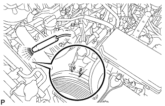 |
Inspect the ignition timing during idling.
Remove SST from the DLC3.
Inspect the ignition timing during idling.
Disconnect the timing light from the engine.
| 19. INSPECT ENGINE IDLE SPEED |
Warm up the engine.
When using the intelligent tester:
Connect the intelligent tester to the DLC3.
Enter the following menus: Powertrain / Engine and ECT / Data List / All Data / Engine Speed.
Disconnect the intelligent tester from the DLC3.
When not using the intelligent tester:
 |
Connect SST to terminal 9 (TAC) of the DLC3.
| *a | Front view of DLC3 |
Race the engine at 2500 rpm for approximately 90 seconds.
Inspect the engine idle speed.